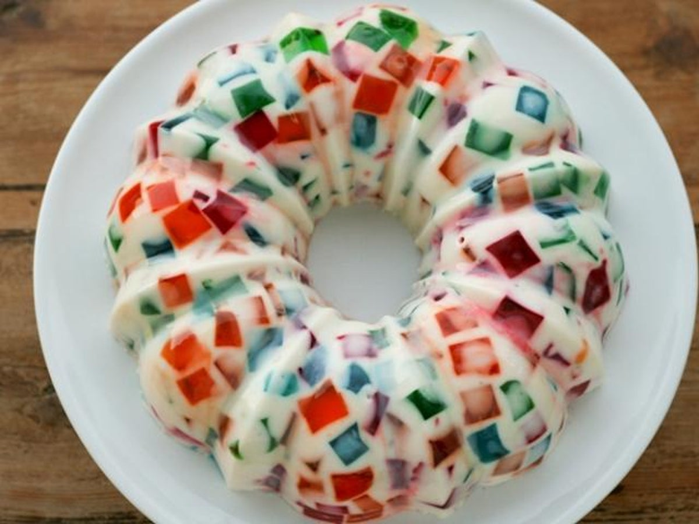

GELATINA DE MOSAICO
INGREDIENTES
1 sobre de gelatina de manzana
1 sobre de gelatina de fresas
1 sobre de gelatina de naranja
1 sobre de gelatina de uvas
Agua para las gelatinas
1 lata de media crema
1 lata de leche evaporada
1 lata de leche condensada
28 g de gelatina sin sabor
20 cucharadas de agua fria
PROCEDIMIENTO
- Checa el modo de preparaciòn de la gelatina que indica al envase y a la
cantidad de tazas de agua que haya que incorporarlerèstale una.
- Deja cuajar en la nevera ( cada una en su recipiente) y una vez que estè bien
firme, retìralas y còrtalas en cuadros.
- Pon en la licuadora la leche evaporada, la media crema y la leche condensada.
- Hidrata la gelatina en agua fria y remueve bien durante unos segundos
para que no queden grumos. Deja reposar durante 5 minutos y lleva al
microondas durante 60 segundos a potencia mìnima.
- Deja enfriar la grenetina fuera de la nevera durante unos minutos.
- En el molde donde haràs este postre de gelatina de mosaico, coloca las
gelatinas de colores ya cortadas en cuadritos, intercalàndolas si lo deseas.
- Posteriormente, pon en funcionamiento la licuadora y de a poco ve
incorporando la gelatian de sabor.
- Finalmente, echa el lìquido sobre los cubos de gelatinas de colores y refrigera
hasta que se afirme.
